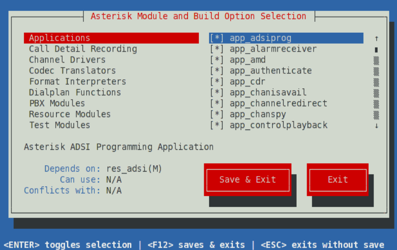
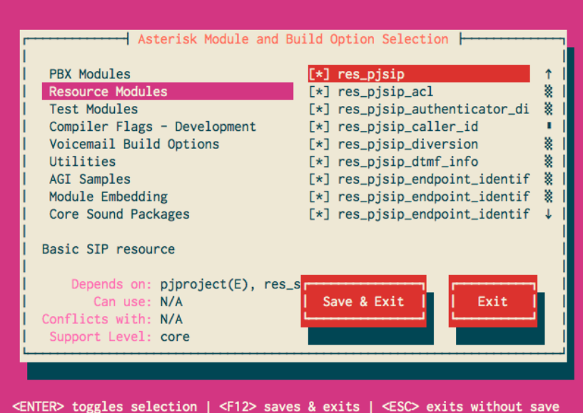
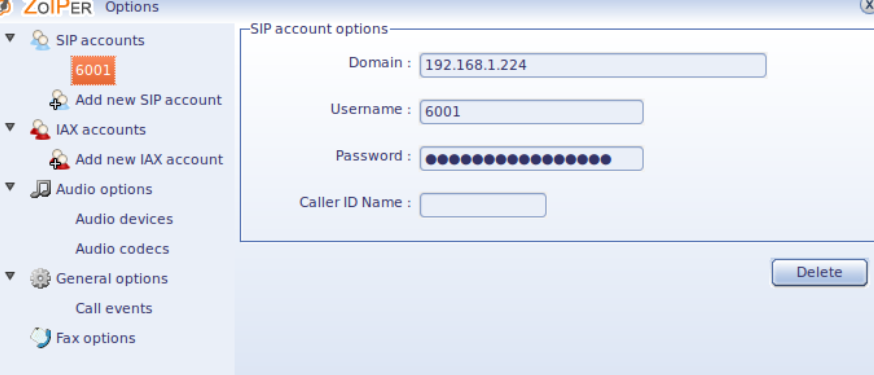
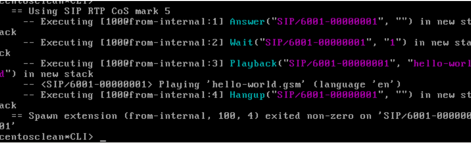

第四章 安装与入门（Getting Started）¶
1. 准备安装 Beginning Asterisk¶
Asterisk 是一个功能极其强大的开源通信平台，它提供了一整套构建语音通信系统（包括 IP PBX、网关、会议系统等）的工具和框架。
- Asterisk 是基于 GPLv2 授权协议发布的开源项目。这意味着任何人都可以自由地获取、修改和再发布 Asterisk 的源代码。这种开放性不仅促进了全球社区的协作，也加速了电信系统功能的创新。
- 核心模块由 C 编写，提供极高的性能和对底层系统资源的精细控制。written in the C Programming Language
- Asterisk 主要在 Linux 上运行，但也可移植到其他 Unix 系统。这种依赖性是基于其对 POSIX 接口的广泛使用。熟悉 Linux 文件系统结构（如 /etc/asterisk）和守护进程控制机制（如 systemd）是部署 Asterisk 的基础。running on Linux (or other types of Unix )
- Asterisk 是构建企业 IP 电话系统（PBX）的核心组件，支持话务分配、队列、会议桥接、自动语音应答（IVR）、呼叫转移等企业级功能。powering Business Telephone Systems
- 它并非局限于某一种 VoIP 协议，而是能对接 SIP、IAX、H.323 等标准协议，同时也能与传统 PSTN 网络（通过 FXO/FXS 硬件接口）集成。connecting many different Telephony protocols
工具箱而非应用程序
- Asterisk 与传统通信软件的最大区别在于，它更像是一个**通信开发平台或框架**。你可以用它构建：
- IP PBX：内建应用支持包括 IVR、语音邮箱、呼叫录音、呼叫队列等，用户可通过 extensions.conf 编写拨号逻辑。
- VoIP 网关：用于连接不同网络之间的协议转换，例如 SIP ↔ PSTN。
- 会议系统：通过 confbridge 或 meetme 模块支持多方语音会议。
- 更多自定义通信解决方案：例如呼叫中心、语音导航、自动播报系统等。
学习资源推荐
-
术语与基础概念
- 电信术语表：帮助你理解 PBX、DID、FXO/FXS 等专业术语。Telephony Terminology
- Asterisk 词汇表：解释系统中常见的配置与模块术语。Asterisk Terms Glossary
- 电信缩略语库：推荐 Mob1le 提供的广泛缩略语列表。Telecom Acronyms (very comprehensive)
-
协议学习 Telephony Protocols
- IP Telephony Protocols Overview
- SIP 协议概述SIP Overview
- RFC 5411 – “A Hitchhiker's Guide to SIP”：系统梳理 SIP 发展脉络A Hitchhiker's Guide to SIP
-
Linux/Unix 基础
-
安装与配置 Asterisk
- Asterisk: The Definitive Guide 3rd Edition
-
C 编程基础 Programming
- 基础教程 C Programming Tutorial
- Learn-C.org 的交互式平台 Interactive C Tutorial
- TutorialsPoint 的速查手册 C Programming Quick Guide
-
社区支持资源
- 邮件列表与 IRC 聊天室：快速获得社区帮助，适合深度技术交流。 Asterisk Mailing List and IRC
- Asterisk 论坛：适合初学者提出问题和查看历史问题解答。Asterisk Community Forums
- VoIP Users Conference Online Community：持续的技术讨论与应用分享。 Voip Users Conference main site and on Google+
2. 安装Asterisk Installing Asterisk¶
1. What to Download：下载源码包的选择与版本建议¶
Downloads of Asterisk are available at https://downloads.asterisk.org/pub/telephony/asterisk/. The currently supported versions of Asterisk will each have a symbolic link to their related release on this server, named asterisk-{version}-current**.tar.gz**. All releases ever made for the Asterisk project are available at https://downloads.asterisk.org/pub/telephony/asterisk/releases/. Asterisk 的源码包托管在官方 FTP 服务器。该目录下包含所有历史版本的发布包，以及符号链接指向每个受支持版本的当前稳定版（如 asterisk-22-current.tar.gz），推荐从此处下载，确保获取安全修复和最新补丁。
The currently supported versions of Asterisk are documented on the Asterisk Versions page. It is highly recommended that you install one of the currently supported versions, as these versions continue to receive bug and security fixes.
建议版本选择
- 稳定性优先：选择 LTS (Long Term Support) 版本，如 Asterisk 20（当前 LTS）
- 新功能优先：选择最新标准版本（如 Asterisk 22）
- 不建议使用 EOL（已停止支持）版本，例如 14、16
当前运行的是 Asterisk 22.1.0，属于标准版本的最新分支，适合探索新特性。
1. 系统要求（System Requirements）¶
在编译前，请参考 Asterisk 的 系统要求文档。虽然 ./configure 会自动检测依赖项，但手动提前安装可以避免反复调试。Review Asterisk's System Requirements in order to determine what needs to be installed for the version of Asterisk you are installing. While Asterisk will look for any missing system requirements during compilation, it's often best to install these prior to configuring and compiling Asterisk.
也可使用 Asterisk 自带的脚本安装依赖：Asterisk does come with a script, install_prereq, to aid in this process. If you'd like to use this script, download Asterisk first, then see Checking Asterisk Requirements for instructions on using this script to install prerequisites for your version of Asterisk.
2. 下载方式示例¶
Browse to https://downloads.asterisk.org/pub/telephony/asterisk, select asterisk-14-current.tar.gz, and save the file on your file system.
You can also get the latest releases from the downloads page on asterisk.org.
Alternatively, you can use [wget](https://www.gnu.org/software/wget/) to retrieve the latest release:
cd /usr/local/src
wget https://downloads.asterisk.org/pub/telephony/asterisk/asterisk-22-current.tar.gz
tar zxvf asterisk-22-current.tar.gz
cd asterisk-22*/
3. 其他相关组件¶
在某些应用场景中，Asterisk 需要配合以下组件使用：
libpri
用于支持 ISDN PRI 接口卡（T1/E1/J1/BRI）,仅在你使用 DAHDI 接入 ISDN 线路时需要安装。
The libpri library allows Asterisk to communicate with ISDN connections.You'll only need this if you are going to use DAHDI with ISDN interface hardware (such as T1/E1/J1/BRI cards).
DAHDI（Digium Asterisk Hardware Device Interface）
支持模拟/数字线路（如 FXO/FXS、T1/E1），提供设备驱动与工具集（如 dahdi_cfg, dahdi_tool），可独立于 Asterisk 使用（第三方应用可调用）。如果你不使用模拟/数字接口卡（如 Digium/ Sangoma），DAHDI 可不安装
4. 官方下载路径总览表¶
5. 小结：适用于你的环境¶
| 组件 | 是否必须 | 是否建议安装 | 原因 |
|---|---|---|---|
| Asterisk 22.x | ✅ 必须 | ✅ 强烈建议 | 你当前运行的版本，稳定性和功能均衡 |
| libpri | ❌ 非必须 | ⛔ 不建议 | 若不使用 ISDN 接口卡，可省略 |
| DAHDI | ❌ 非必须 | ⚠️ 可选 | 若未接入 PSTN 或 FXO/FXS 硬件，可省略；否则需安装 dahdi-linux-complete |
2. Prerequisites：安装前的依赖和系统要求¶
1. Checking Asterisk Requirements（环境检测）¶
1. 准备编译 Asterisk（Configuring Asterisk）¶
步骤一：进入源码目录
通常 Asterisk 源码解压至 /usr/local/src 目录（或其他用户定义的路径）。Now it's time to compile and install Asterisk. Let's change to the directory which contains the Asterisk source code.
wget https://downloads.asterisk.org/pub/telephony/asterisk/asterisk-22-current.tar.gz
tar zxvf asterisk-22-current.tar.gz
cd asterisk-22*/
步骤二：运行 ./configure 配置脚本,该脚本用于系统探测与配置：。Next, we'll run a command called ./configure, which will perform a number of checks on the operating system, and get the Asterisk code ready to compile on this particular server.
此命令会执行如下操作：
- 检查 C 编译器（gcc）、链接器（ld）等工具链
- 检查是否已安装 Asterisk 所需的系统库
- 根据系统类型生成特定的 Makefile 和配置选项
- 自动启用或禁用某些模块支持（如 libxml2、uuid、libssl、libedit）
- 若缺少依赖项，configure 会中止并打印警告。
- 成功完成后会输出如下标志信息（ASCII Art 与系统信息）：
- 如果你多次运行 ./configure 可能遇到“缓存未更新”的问题，建议使用以下命令
make distclean清除构建缓存：- 清除 configure 缓存信息（如 config.cache）
- 删除中间文件（如 Makefile, menuselect.makeopts）
- 回退到源码初始状态
- 此操作不会删除源码本身，适用于干净重配置。
This will run for a couple of minutes, and warn you of any missing system libraries or other dependencies. Unless you've installed all of the System Requirements for your version of Asterisk, the configure script is likely to fail. If that happens, resolve the missing dependency manually, or use the install_prereq script to resolve all of the dependencies on your system.
Once a dependency is resolved, run configure again to make sure the missing dependency is fixed.
!!! tip ** If you have many missing dependencies, you may find yourself running **configure
a lot. If that is the case, you'll do yourself a favour by checking the System Requirements or installing all dependencies via the install_prereq script.
On this PageUpon successful completion of ./configure, you should see a message that looks similar to the one shown below. (Obviously, your host CPU type may be different than the below.)
configure: Package configured for:
configure: OS type : linux-gnu
configure: Host CPU : x86_64
configure: build-cpu:vendor:os: x86_64 : unknown : linux-gnu :
configure: host-cpu:vendor:os: x86_64 : unknown : linux-gnu :
2. 使用 install_prereq 自动安装依赖¶
install_prereq 脚本位于源码目录下的 contrib/scripts/ 中，是官方提供的自动化依赖安装脚本。The install_prereq script is included with every release of Asterisk in the contrib/scripts subdirectory. The script has the following options:
- test - print only the libraries to be installed.
- install - install package dependencies only. Depending on your distribution of Linux, version of Asterisk, and capabilities you wish to use, this may be sufficient.
- install-unpackaged - install dependencies that don't have packages but only have tarballs. You may need these dependencies for certain capabilities in Asterisk.
使用 install_prereq 前，务必更新系统包索引，避免依赖冲突或系统组件被误删
You should always use your operating system's package management tools to ensure that your system is running the latest software before running install_prereq.
脚本参数说明：
| 参数 | 作用 | 适用场景 |
|---|---|---|
| test | 显示将安装的库，不实际安装 | 适合预览影响 |
| install | 使用系统包管理器安装依赖项 | 推荐使用 |
| install-unpackaged | 安装源码依赖（如部分 codec 库） | 使用特定模块时 |
检查是否成功
确认依赖后，再次执行： ./configure 如未提示错误，即表示可以进入下一阶段（menuselect 选择模块）。
3. 小结¶
| 步骤 | 命令 | 说明 |
|---|---|---|
| 进入源码目录 | cd /usr/local/src/asterisk-22.X.Y | 替换为你的版本号 |
| 清理缓存（可选） | make distclean | 如果需要重新配置 |
| 自动安装依赖 | cd contrib/scripts && ./install_prereq install | 推荐初学者使用 |
| 运行配置脚本 | ./configure | 自动生成 Makefile 等构建系统 |
| 检查缺失 | 依赖提示后用 apt 安装 | Debian 系统一般包名一致 |
3. Using Menuselect to Select Asterisk Options（功能组件选择器）¶
1. 什么是 Menuselect？¶
menuselect 是 Asterisk 源码编译阶段的模块配置系统，它控制：
- 哪些模块将被编译（如 app_dial, chan_sip, res_musiconhold）
- 编译行为的可选特性（如是否启用调试、是否嵌入模块）
- 支持哪些语音格式（如 GSM、WAV）
- 使用何种声音文件包（如核心提示音、等待音乐）
这是构建“定制化 Asterisk”的关键步骤 —— 你可以裁剪未使用的模块，提高运行效率与安全性。
The next step in the build process is to tell Asterisk which modules to compile and install, as well as set various compiler options. These settings are all controlled via a menu-driven system called Menuselect. To access the Menuselect system, type:
界面说明：
- 左侧：模块类别（如 Applications, Channel Drivers）
- 右侧：模块列表，支持按需启用/禁用
- [ * ]：已选模块
- [XXX]：不可编译，缺少依赖（查看下方 Depends upon: 提示）
- Tab：切换区域
- Enter：选中或取消模块
- F12 或选择 Save and Exit：保存并退出
The Menuselect menu should look like the screen-shot below. On the left-hand side, you have a list of categories, such as Applications, Channel Drivers, and PBX Modules. On the right-hand side, you'll see a list of modules that correspond with the select category. At the bottom of the screen you'll see two buttons. You can use the Tab key to cycle between the various sections, and press the Enter key to select or unselect a particular module. If you see [*] next to a module name, it signifies that the module has been selected. If you see *XXX next to a module name, it signifies that the select module cannot be built, as one of its dependencies is missing. In that case, you can look at the bottom of the screen for the line labeled Depends upon: for a description of the missing dependency.

When you're first learning your way around Asterisk on a test system, you'll probably want to stick with the default settings in Menuselect. If you're building a production system, however, you may not wish to build all of the various modules, and instead only build the modules that your system is using.
When you are finished selecting the modules and options you'd like in Menuselect, press F12 to save and exit, or highlight the Save and Exit button and press enter.

2. 模块支持级别（Support Levels）¶
Menuselect will also show the support level for a selected module or build option. The support level will always be one of core, extended, or deprecated.
| 支持级别 | 含义 |
|---|---|
| core | 官方核心支持，长期维护 |
| extended | 扩展模块，由社区或 Sangoma 支持 |
| deprecated | 废弃模块，未来将被移除，慎用 |
3. Menuselect 模块类别一览¶
| 类别 | 描述 |
|---|---|
| Add-ons | 含特殊授权模块（非 GPLv2 兼容） |
| Applications | 呼叫控制逻辑（如 app_dial, app_playback） |
| Bridging Modules | 媒体桥接方式（如 bridge_softmix） |
| CDR / CEL | 呼叫记录驱动（数据库对接） |
| Channel Drivers | 协议模块（如 chan_pjsip, chan_iax2） |
| Codecs | 音频/视频编解码（如 G.729, Opus） |
| Format Interpreters | 媒体文件格式支持（如 WAV, GSM） |
| Dialplan Functions | 拨号计划函数（如 SET, CALLERID） |
| PBX Modules | Dialplan 路由逻辑核心 |
| Resource Modules | 工具性资源（如 res_musiconhold, res_odbc） |
| Compiler Flags - Development | 编译调试选项（建议开发环境开启） |
| Voicemail Build Options | 语音信箱存储方式（如 ODBC, IMAP） |
| Utilities / AGI Samples / Module Embedding | 工具与样例 |
| Core/Extras Sound Packages | 核心提示音、附加语音文件 |
| Music On Hold File Packages | 等待音乐素材 |
4. 命令行控制 Menuselect（推荐用于自动化编译）¶
生成配置文件。Options in Menuselect can be controlled from the command line. Menuselect can be built without invoking the user interface via the menuselect.makeopts target,此命令会生成 menuselect.makeopts 文件，记录所有选项。
查看帮助：Available options can be viewed using the --help command line parameter:
Some of the more common options are shown below.
!!! tip Menuselect Output** Asterisk expects all Menuselect options to be written to the menuselect.makeopts file. When enabling/disabling **Menuselect
options via the command line, your output should typically be to that file.
查看所有可选项：
To list all options in Menuselect, use the --list-options command line parameter:
查看类别,输出所有类别名（例如 MENUSELECT_APPS、MENUSELECT_CODECS）： To list only the categories, use the --category-list command line parameter:
To list the options in a category, use the --list-category command line parameter:
menuselect/menuselect --list-category MENUSELECT_OPTS_app_voicemail
+ FILE_STORAGE
- ODBC_STORAGE
- IMAP_STORAGE
- 表示已启用，- 表示禁用
To enable an option in Menuselect, use the --enable command line parameter:
To disable an option in Menuselect, use the --disable command line parameter:
```bash title-="禁用模块"
menuselect/menuselect --disable app_voicemail menuselect.makeopts
An entire category can be enabled in **Menuselect** using the `--enable-category` command line parameter:
```bash title="启用整个类别"
menuselect/menuselect --enable-category MENUSELECT_CODECS menuselect.makeopts
实战建议（基于生产经验）
| 场景 | 推荐设置 |
|---|---|
| 轻量 SIP 网关 | 仅启用 chan_pjsip, app_dial, res_rtp_asterisk, format_wav，禁用所有 chan_sip、DAHDI 模块 |
| 呼叫中心系统 | 启用 app_queue, res_agi, cdr_odbc, func_callerid, 所有 core sounds, MOH |
| 调试或开发环境 | 启用 Compiler Flags - Development > DONT_OPTIMIZE, DEBUG_THREADS, DEBUG_CHANNEL_LOCKS |
4. Building and Installing Asterisk（核心编译与安装）¶
1. 标准编译流程¶
第一步：编译源码¶
Now we can compile and install Asterisk. To compile Asterisk, simply type make at the Linux command line.
该命令将基于 configure 和 menuselect 所生成的配置文件：
- 编译核心模块与所选组件
- 生成 Asterisk 可执行程序及其共享库
- 时间通常在几分钟至十几分钟之间（视硬件性能）
The compiling step will take several minutes, and you'll see the various file names scroll by as they are being compiled. Once Asterisk has finished compiling, you'll see a message that looks like:
+--------- Asterisk Build Complete ---------+
+ Asterisk has successfully been built, and +
+ can be installed by running: +
+ +
+ make install +
+-------------------------------------------+
+--------- Asterisk Build Complete ---------+
第二步：安装构建产物¶
On this PageAs the message above suggests, our next step is to install the compiled Asterisk program and modules. To do this, use the make install command.
此步骤执行以下操作：
- 安装二进制程序（/usr/sbin/asterisk）
- 安装动态模块（/usr/lib/asterisk/modules/）
- 安装头文件（供后续开发）
- 创建运行目录（如 /var/run/asterisk）
When finished, Asterisk will display the following warning:
+---- Asterisk Installation Complete -------+
+ +
+ YOU MUST READ THE SECURITY DOCUMENT +
+ +
+ Asterisk has successfully been installed. +
+ If you would like to install the sample +
+ configuration files (overwriting any +
+ existing config files), run: +
+ +
+ make samples + # 安装示例配置文件
+ +
+-------------------------------------------+
+---- Asterisk Installation Complete -------+
Warning
As the message above suggests, we very strongly recommend that you read the security documentation before continuing with your Asterisk installation. Failure to read and follow the security documentation can leave your system vulnerable to a number of security issues, including toll fraud. 请务必阅读 Asterisk 的安全文档，配置访问控制（如 AMI 权限、ACL、密码强度），否则将面临恶意呼叫（Toll Fraud）风险。
2. 高级构建与安装选项（Advanced Build Options）¶
1. 自定义编译参数¶
In some environments, it may be necessary or useful to modify parts of the build or installation process. Some common scenarios are listed here
1 自定义编译参数¶
Specific flags can be passed to gcc when Asterisk is configured, using the CFLAGS and LDFLAGS environment variables。使用 CFLAGS / LDFLAGS 传递给 gcc 编译器，例如添加 -pg 以便使用 gprof 做性能分析：
2 启用详细编译信息（调试用）¶
To see all of the flags passed to gcc, build using the NOISY_BUILD setting set to YES:
3 禁用原生 CPU 优化 Building for non-native architectures¶
Generally, Asterisk attempts to optimize itself for the machine on which it is built on. On some virtual machines with virtual CPU architectures, the defaults chosen by Asterisk's compilation options will cause Asterisk to build but fail to run. To disable native architecture support, disable the BUILD_NATIVE option in menuselect。某些虚拟机环境下（如非 x86_64 或 CPU 识别错误），BUILD_NATIVE 可能导致构建后无法运行：
4 安装到自定义目录 Installing to a custom directory¶
While there are multiple ways to sandbox an instance of Asterisk, the preferred mechanism is to use the --prefix option with the configure script。通过 --prefix 参数指定安装路径（例如沙箱部署或打包环境）：
Note that the default value for prefix is /usr/local.
3. 常用 Make Targets 汇总¶
| 命令 | 说明 |
|---|---|
| make / make all | 编译所有已启用模块（默认） |
| make full | 编译并生成开发文档（需 Python） |
| make install | 安装 Asterisk |
| make samples | 安装官方示例配置（覆盖现有 .conf） |
| make config | 安装初始化脚本（如 systemd / init.d） |
| make clean | 删除中间文件 |
| make dist-clean | 删除所有构建与配置文件（推荐 clean 编译） |
| make uninstall | 卸载 Asterisk 二进制与模块文件 |
| make uninstall-all | 卸载所有内容，包括配置文件、日志等 |
| make progdocs | 用 Doxygen 生成 HTML API 文档（位于 doc/） |
注意事项
uninstall-all build target will remove all Asterisk configuration from your system.
Do not execute uninstall-all unless you are sure that is what you want to do.
make uninstall-all 是彻底清除，包括 /etc/asterisk 中的配置文件。执行前请确认！
安全文档必须阅读：尤其是 AMI (manager.conf)、外部接口（如 PJSIP）等。
不要直接在生产服务器上用 make samples，它会覆盖现有配置。
4. 建议的构建流程（适用于生产部署）¶
cd /usr/local/src/asterisk-22.X.Y
./configure --prefix=/usr/local/asterisk-22
make menuselect # 启用需要的模块
make
make install
make config
5. Installing Sample Files（安装示例配置）¶
1. 概述：安装配置示例文件¶
!!! warning Asterisk Sample Configs: not a sample PBX configuration
For many of the sample configuration files that make samples installs, the configuration contains more than just an example configuration. The sample configuration files historically were used predominately for documentation of available options. As such, they contain many examples of configuring Asterisk that may not be ideal for standard deployments.
While installing the sample configuration files may be a good starting point for some people, they should not be viewed as recommended configuration for an Asterisk system.
Asterisk 提供了一套完整的示例配置文件（*.conf），用于帮助用户了解：
- 每个模块的配置语法
- 配置项的可用选项与说明
- 功能模块之间的协作方式（如 PJSIP ↔ Dialplan ↔ Voicemail）
To install a set of sample configuration files for Asterisk, type:
执行该命令后：
- 默认将所有官方维护的 .conf 示例复制到 /etc/asterisk/
- 若已有配置文件存在（如 extensions.conf），系统会先将其重命名为 .old 后缀（保留旧版本）
Any existing sample files which have been modified will be given a .old file extension. For example, if you had an existing file named extensions.conf, it would be renamed to extensions.conf.old and the sample dialplan would be installed as extensions.conf.
警告：这些不是“建议配置”！
官方特别强调：
- 示例配置文件并非设计用于直接部署在生产系统中！
原因如下：
- 大量注释与历史内容：示例文件本质上是文档，不是最小化的部署模板
- 启用了非必要模块：默认启用 SIP、IAX、Voicemail 等所有子系统
- 未做任何安全防护：如未配置用户认证、访问控制、加密传输等
- 默认端口、匿名访问开启：极易被扫描工具或 SIP 攻击者利用
2. 正确使用建议¶
| 场景 | 是否建议使用 make samples |
|---|---|
| 新手学习 | ✅ 建议，便于阅读配置逻辑 |
| 测试系统构建 | ✅ 可用于构建功能最全的学习环境 |
| 生产环境初始化 | ❌ 禁止直接使用（可能引入安全风险） |
| 自定义模板开发 | ✅ 建议参考后精简 |
3. 示例配置文件结构概览¶
| 配置文件 | 用途说明 |
|---|---|
| sip.conf / pjsip.conf | 配置 SIP UA、端口、认证、传输方式等 |
| extensions.conf | 拨号计划核心逻辑（Dialplan） |
| voicemail.conf | 配置语音信箱账户、密码、通知等 |
| features.conf | 启用 DTMF 功能（如转接、监听） |
| modules.conf | 控制模块加载（可禁用未用模块） |
| logger.conf | 配置日志输出格式与等级 |
| cdr.conf / cel.conf | 配置通话记录（如 CSV、ODBC 存储） |
| musiconhold.conf | 设置等待音乐的播放列表与格式 |
| manager.conf | 启用 AMI（Asterisk Manager Interface） |
4. AGI（Asterisk Gateway Interface）接口调用 的核心配置文¶
AGI 的调用本质上是 Dialplan 的一部分。你不会在独立的 .conf 文件中启用 AGI，而是在拨号计划中通过 AGI() 应用指令调用脚本，比如：
[default]
exten => 1001,1,Answer()
same => n,AGI(hello.agi)
same => n,Hangup()
用法说明
-
AGI(script.agi)
执行 /var/lib/asterisk/agi-bin/script.agi -
EAGI(script.agi)
与 AGI 类似，但在调用脚本时将音频流重定向到 stdin，适合语音识别应用
你可以调用任意语言编写的 AGI 脚本（Perl、Python、PHP、C 等），只要它们符合 AGI 协议规范（通过标准输入输出与 Asterisk 通信）。
相关的辅助配置（可选）: 虽然 extensions.conf 是主要入口，以下文件可能间接影响 AGI 调用：
| 文件 | 说明 |
|---|---|
| res_agi.so | 动态模块，提供 AGI 功能支持（需加载） |
| modules.conf | 控制模块是否自动加载。确保未禁用 res_agi |
| logger.conf | 用于记录 AGI 调用日志（特别是调试阶段） |
| agi.conf | 已废弃或极少使用，仅用于某些历史 AGI 配置，通常不必修改 |
6. Installing Initialization Scripts（服务启动脚本）¶
1. 初始化脚本（Initscript）的作用¶
Asterisk 默认构建不会自动安装为系统服务。为了让它具备以下功能：
- 系统启动时自动运行 Asterisk
- 使用 systemctl 或 service 管理启动/停止
- 监控 Asterisk 守护进程状态
- 统一使用 Linux 的服务管理接口
Now that you have Asterisk compiled and installed, the last step is to install the initialization script, or initscript. This script starts Asterisk when your server starts, will monitor the Asterisk process in case anything bad happens to it, and can be used to stop or restart Asterisk as well. To install the initscript, use the make config command.
此操作将：
在基于 Systemd 的系统中（如 Debian 10+）安装：/lib/systemd/system/asterisk.service
验证 systemd 服务是否安装成功：
systemctl daemon-reexec
systemctl enable asterisk
systemctl start asterisk
systemctl status asterisk
2. 日志轮转机制（logrotate）¶
As your Asterisk system runs, it will generate logfiles. It is recommended to install the logrotation script in order to compress and rotate those files, to save disk space and to make searching them or cataloguing them easier. To do this, use the make install-logrotate command.
Asterisk 运行期间会产生大量日志（默认位于 /var/log/asterisk/），包括：
- full：全量日志
- messages：标准输出信息
- event_log：事件日志（如 AMI）
为了节省磁盘空间、防止日志爆炸式增长，Asterisk 提供标准 logrotate 脚本：
该命令将：
- 安装 /etc/logrotate.d/asterisk
- 设置日志轮转规则：按天/周/月压缩归档，保留若干周期
可执行以下命令测试： logrotate -d /etc/logrotate.d/asterisk
/var/log/asterisk/messages /var/log/asterisk/*log {
missingok
rotate 7 ;保留 7 个周期（7 天）
daily
compress ;压缩旧日志为 .gz
notifempty
create 0640 asterisk asterisk
sharedscripts
postrotate ;日志轮转后，通知 Asterisk 重新加载日志模块
/usr/sbin/asterisk -rx 'logger reload' > /dev/null 2> /dev/null || true
endscript
}
3. 权限与安全建议¶
确保 asterisk 进程以非 root 用户运行：
- 检查 /etc/systemd/system/asterisk.service.d/ 是否存在覆写配置，可用于指定运行用户、日志路径等
- 使用 journalctl -u asterisk 调试服务状态
- 推荐禁用自动登录 Asterisk CLI（生产环境中应强认证）
4. 小结¶
| 操作 | 命令 | 说明 |
|---|---|---|
| 安装 systemd 启动脚本 | make config | 创建 asterisk.service |
| 启用开机自启动 | systemctl enable asterisk | 配合 systemd 使用 |
| 启动服务 | systemctl start asterisk | 启动守护进程 |
| 安装日志轮转脚本 | make install-logrotate | 自动维护日志文件大小与数量 |
| 测试轮转脚本 | logrotate -d /etc/logrotate.d/asterisk | 检查配置正确性 |
7. Validating Your Installation（验证安装）¶
确保 Asterisk 已安装为系统服务（参见前节 make config）。
To check if Asterisk is running, you can use the Asterisk initscript.
systemctl status asterisk ;检查服务状态
/etc/init.d/asterisk status ;或（传统方式）
asterisk (pid 32117) is running... ;输出示例,表示 Asterisk 守护进程已成功启动。
To start Asterisk, we'll use the initscript again, this time giving it the start action:
When Asterisk starts, it runs as a background service (or daemon), so you typically won't see any response on the command line. We can check the status of Asterisk and see that it's running using the command below. (The process identifier, or pid, will obviously be different on your system.)启动后并不会输出日志到终端 —— 它会在后台以 daemon 模式运行。
And there you have it! You've compiled and installed Asteriske. 进入 CLI 界面验证模块加载：
8. Exploring Sound Prompts（语音提示文件配置）¶
1. Asterisk 自带提示音包概述¶
Asterisk 内置了大量预录制的语音提示（prompts），用于提供用户交互提示，例如：
- “Please enter the extension of the person you are trying to reach.”
- “You have voicemail.”
- “The number you have dialed is not in service.”
这些提示语涵盖：
| 类型 | 示例用途 |
|---|---|
| 功能提示 | IVR 菜单、转接引导、语音信箱 |
| 状态说明 | 通话失败、线路占用、系统错误 |
| 趣味提示 | 彩蛋，如“weasels have eaten our phone system”（鼬鼠吃掉了电话系统） |
Asterisk comes with a wide variety of pre-recorded sound prompts. When you install Asterisk, you can choose to install both core and extra sound packages in several different file formats. Prompts are also available in several languages. To explore the sound files on your system, simply find the sounds directory (this will be /var/lib/asterisk/sounds* on most systems) and look at the filenames. You'll find useful prompts ("Please enter the extension of the person you are looking for..."), as well as as a number of off-the-wall prompts (such as "Weasels have eaten our phone system", "The office has been overrun with iguanas", and "Try to spend your time on hold not thinking about a blue-eyed polar bear") as well.
Sound Prompt Format语音提示格式
Sound prompts come in a variety of file formats, such as .wav and .ulaw files. When asked to play a sound prompt from disk, Asterisk plays the sound prompt with the file format that can most easily be converted to the CODEC of the current call. For example, if the inbound call is using the alaw CODEC and the sound prompt is available in .gsm and .ulaw format, Asterisk will play the .ulaw file because it requires fewer CPU cycles to transcode to the alaw CODEC.
You can type the command **core show translation at the Asterisk CLI to see the transcoding times for various CODECs. The times reported (in Asterisk 1.6.0 and later releases) are the number of microseconds it takes Asterisk to transcode one second worth of audio. These times are calculated when Asterisk loads the codec modules, and often vary slightly from machine to machine. To perform a current calculation of translation times, you can type the command core show translation recalc 60.
2. 提示音文件目录结构¶
默认存储路径： /var/lib/asterisk/sounds/
目录结构如下：
sounds/
├── en/ # 英文提示（默认语言）
│ ├── digits/ # 数字读音
│ ├── letters/ # 字母读音
│ └── voicemail/ # 语音信箱提示
├── zh/ # 中文提示（如已安装）
│ └── digits/
├── es/ # 西班牙语提示
└── custom/ # 用户自定义提示
你可以通过以下命令查看提示音文件：
find /var/lib/asterisk/sounds -type f
file convert /var/lib/asterisk/sounds/en/tt-weasels.gsm /tmp/test.wav ;或进入CLI
3. 多种音频格式支持与选择原则¶
Asterisk 支持多种音频文件格式（由所启用的格式模块决定）：
| 格式 | 文件扩展名 | 优点 |
|---|---|---|
| .ulaw / .alaw | G.711 | 不压缩，CPU 转码效率高 |
| .gsm | GSM 06.10 | 体积小，适合低带宽 |
| .wav | PCM / RIFF | 通用兼容，较占空间 |
| .g722 | 宽带语音 | 更清晰（HD Voice） |
| .slin | 原始 PCM | 性能极佳，无需转码 |
播放选择逻辑
当 Asterisk 播放一个提示音时，它优先选择与通话 CODEC 最匹配的音频格式，以减少转码负担。
示例：
通话使用 alaw 编解码，系统中存在以下格式的提示音：
- welcome.ulaw
- welcome.gsm
Asterisk 会优先使用 .ulaw，因为从 ulaw → alaw 的转码开销远小于 gsm → alaw。
4. 查看转码开销：core show translation¶
此命令在 Asterisk CLI 中显示不同 CODEC 转换的性能代价（单位为微秒/秒）：core show translation
输出示例：
Translation times between formats (in microseconds per second)
g723 g729 gsm ulaw alaw g726 ilbc slin ...
g723 - - 950 320 330 500 800 150 ...
g729 - - 980 350 340 520 820 160 ...
gsm 940 960 - 210 200 480 760 130 ...
- 越低越好
- 转换成本高的组合可能造成延迟、语音质量下降
5. 语言与国际化支持（Multilingual Prompts）¶
Asterisk 支持多语言提示语：
- 安装音频包时，可选择语言（如英文 en、中文 zh）
- 通过 Dialplan 设置语言环境：
多语言场景中推荐使用：
- Set(CHANNEL(language)=
) - Playback() / Background() 调用标准路径文件
- 创建 /var/lib/asterisk/sounds/
/custom/ 目录用于定制提示
6. 安装提示音包（Makefile 方式）¶
你可在 menuselect 中选择提示音语言和格式：
构建完成后安装提示音文件：
或手动下载安装：
7. 小结¶
| 场景 | 推荐音频格式 | CODEC 场景匹配 |
|---|---|---|
| SIP 内部通话 (G.711) | .ulaw / .alaw | 减少 CPU 转码 |
| 低带宽跨网通话 | .gsm | 减少网络传输 |
| 高保真录音 | .slin / .g722 | 提升清晰度 |
| 多语言 IVR | CHANNEL(language) 设置 + 多语言包 |
3. 建立第一个入门呼叫流程 Hello World¶
快速创建你的第一个 SIP 呼叫。You've just installed Asterisk and you have read about basic configuration. Now let's quickly get a phone call working so you can get a taste for a simple phone call to Asterisk.
先决条件（环境要求） Requirements
| 要素 | 要求 |
|---|---|
| 物理或软电话 | 与 Asterisk 同局域网（推荐使用 Zoiper） |
| SIP 驱动 | 已启用 chan_sip 或 chan_pjsip（通过 make menuselect 配置） |
| 端口联通 | 默认 SIP 端口（UDP 5060）在防火墙中已放通 |
| Asterisk 安装路径 | /etc/asterisk 存在配置文件，或已执行 make samples |
This tutorial assumes the following:
- You have a SIP phone plugged into the same LAN where the Asterisk server is plugged in, or can install the Zoiper softphone used in the example
- If you use your own hardware phone, we assume both the phone and Asterisk can reach each other and are on the same subnet.
- When you built Asterisk, you should have made sure to build the SIP channel driver you wanted to use, which may imply other requirements. For example if you want to use chan_pjsip, then make sure you followed the Installing pjproject guide.
配置文件准备，确保以下文件存在并具备基础配置：
| 配置文件 | 作用 |
|---|---|
| asterisk.conf | 主配置文件（可用默认） |
| modules.conf | 模块加载控制（建议启用 autoload=yes） |
| extensions.conf | 拨号计划（必配） |
| sip.conf 或 pjsip.conf | SIP 注册用户及传输层配置（必配其一） |
You should have already run "make samples" if you installed from source, otherwise you may have the sample config files if you installed from packages.
If you have no configuration files in /etc/asterisk/* then grab the sample config files from the source directory by navigating to it and running "make samples".
Files needed for this example:
- asterisk.conf
- modules.conf
- extensions.conf
- sip.conf or pjsip.conf
You can use the defaults for asterisk.conf and modules.conf, we'll only need to modify extensions.conf and sip.conf or pjsip.conf.
To get started, go ahead and move to the /etc/asterisk/ directory where the files are located.
1. 配置拨号计划：extensions.conf¶
Backup the sample extensions.conf and create a new one 将原文件备份：
I'm assuming you use the VI/VIM editor here, after all, it is the best.
We are going to use a very simple dialplan. A dialplan is simply instructions telling Asterisk what to do with a call.
Edit your blank extensions.conf to reflect the following:
[from-internal]
exten = 100,1,Answer()
same = n,Wait(1)
same = n,Playback(hello-world)
same = n,Hangup()
| 步骤 | 作用 |
|---|---|
| exten = 100,1,Answer() | 应答拨入的分机 100 |
| Wait(1) | 等待 1 秒 |
| Playback(hello-world) | 播放语音提示 /var/lib/asterisk/sounds/en/hello-world.* |
| Hangup() | 挂断通话 |
When a phone dials extension 100, we are telling Asterisk to Answer the call, Wait one second, then Play (Playback) a sound file (hello-world) to the channel and Hangup.
2. 选择并配置 SIP 通道驱动¶
Depending on the version of Asterisk in use, you may have the option of more than one SIP channel driver. You'll have to pick one to use for the example.
你必须二选一配置：chan_sip 或 chan_pjsip
- Asterisk 11 and previous: chan_sip is the primary option.
- Asterisk 12 and beyond: You'll probably want to use chan_pjsip (the newest driver), but you still have the option of using chan_sip as well
Follow the instructions below for the channel driver you chose.
配置 chan_pjsip（推荐）
Backup and edit a new blank pjsip.conf, just like you did with extensions.conf.
Then add the following to your pjsip.conf file:
[transport-udp]
type=transport
protocol=udp
bind=0.0.0.0
[6001]
type=endpoint
context=from-internal
disallow=all
allow=ulaw
auth=6001
aors=6001
[6001]
type=auth
auth_type=userpass
password=unsecurepassword
username=6001
[6001]
type=aor
max_contacts=1
说明：
- endpoint 是具体通话终端配置
- auth 提供 SIP 用户认证信息
- aor（Address of Record）用于定义注册数量和寻址方式
- 所有块名相同（[6001]）是为了关联相同实体（支持多块叠加）
3. 配置 SIP 软电话（Zoiper）¶
- 安装 Zoiper
- 添加 SIP 账户：
- 用户名：6001
- 密码：unsecurepassword
- 域（Domain）：Asterisk 的 IP 地址 - 点击 注册，状态应显示 “Registered”
You can use any SIP phone you want of course, but for this demonstration we'll use Zoiper, a Softphone which just happens to be easily demonstrable.
You can find the latest version of Zoiper for your platform at their website. You can install it on the same system you are running Asterisk on, or it may make more sense to you if you install on another system on the same LAN (though you might find complication with software firewalls in that case).
Once you have Zoiper installed. Configure a new SIP account in Zoiper.
- Once Zoiper is opened, click the wrench icon to get to settings.
- Click "Add new SIP account"
- Enter 6001 for the account name, click OK
- Enter the IP address of your Asterisk system in the Domain field
- Enter 6001 in the Username field
- Enter your SIP peer's password in the Password field
- Enter whatever you like in Caller ID Name or leave it blank
- Click OK

Your results should look like the above screen shot.
4. 启动 Asterisk 并连接 CLI¶
Back at the Linux shell go ahead and start Asterisk. We'll start Asterisk with a control console (-c) and level 5 verbosity (vvvvv).启动 Asterisk（如果未运行）：
Or if Asterisk is already running, restart Asterisk from the shell and connect to it.或重启服务并附加 CLI：
5. 发起呼叫测试¶
- 在 Zoiper 中：
- 拨打 100
- 点击拨号 - 正常结果：
- Asterisk CLI 显示音频流建立
- 播放 hello-world 语音提示
- 通话自动挂断
Go back to the main Zoiper interface, and make sure the account is registered. Select the account from the drop down list and click the Register button next to it. If it says registered, you are good to go. If it doesn't register, then double check your configuration.
Once registered, enter extension 100 and click the Dial button. The call should be made and you should hear the sound file hello-world!
On the Asterisk CLI, you should see something like:

6. 小结¶
| 步骤 | 说明 |
|---|---|
| 编辑 extensions.conf | 设置拨号逻辑 |
| 编辑 sip.conf 或 pjsip.conf | 注册终端 |
| 注册软电话 | Zoiper 使用账号 6001 |
| 启动并进入 Asterisk CLI | 查看调试信息 |
| 拨号 100 测试 | 听到 hello-world |
常见错误排查
| 问题 | 原因 | 解决方案 |
|---|---|---|
| Zoiper 显示 Not Registered | Asterisk 未运行或防火墙拦截 | 检查服务与端口 |
| 拨号无反应 | 没有 extensions.conf 拨号段 | 确保使用了 from-internal |
| 播放失败 | 无法找到 hello-world.* 文件 | 确认提示音已安装 |
| CLI 无输出 | 使用了静默模式或未连接 | 启动时加上 -rvvvvv |